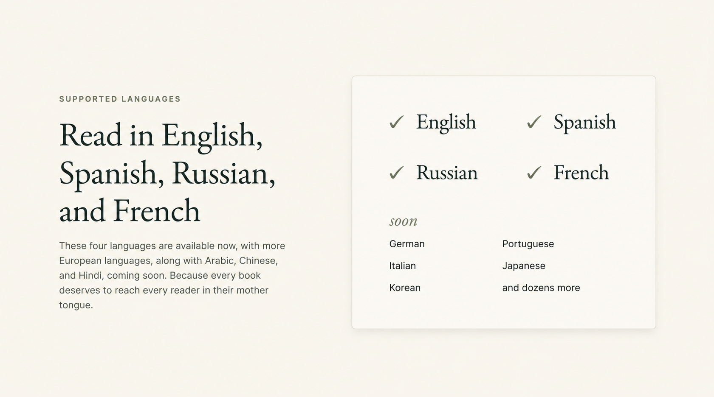
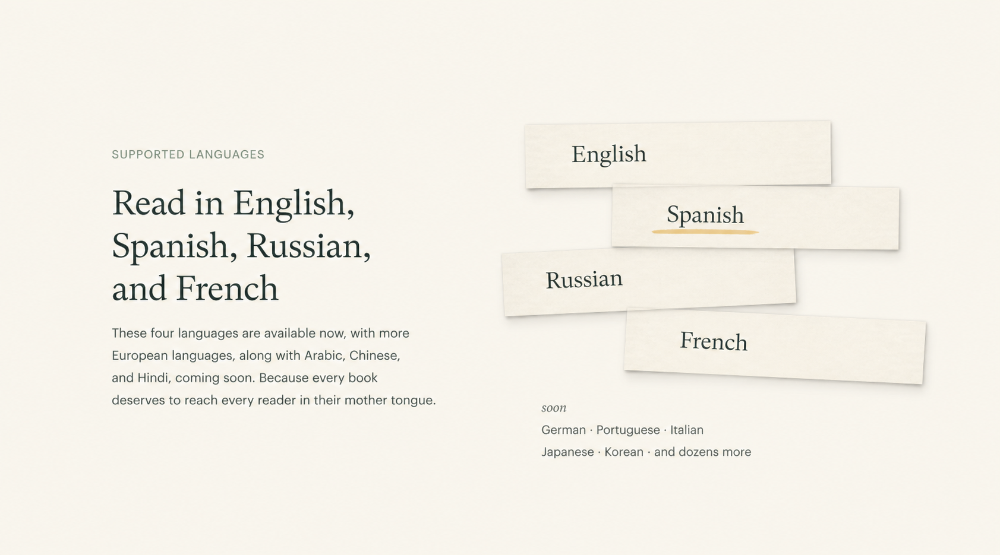
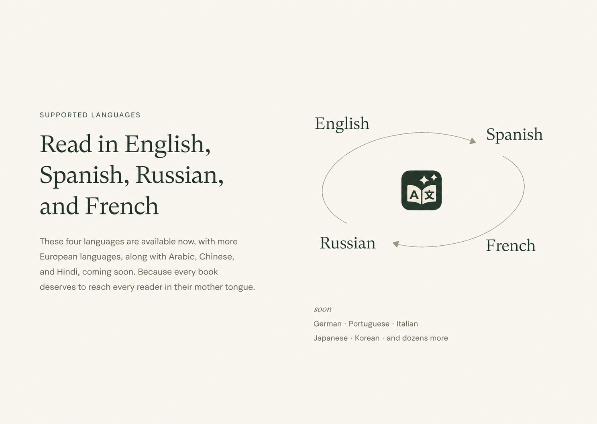
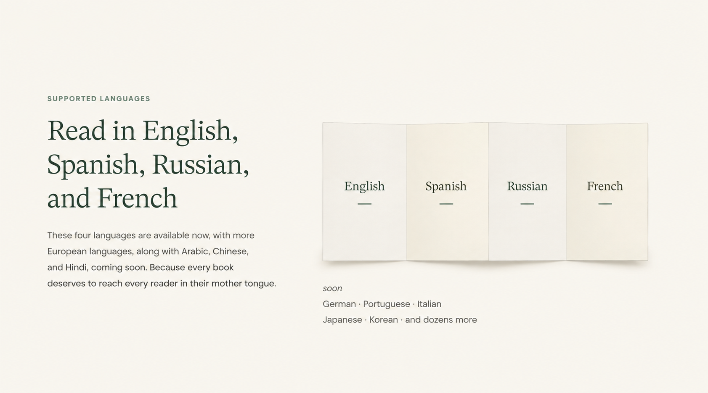

Language-section refinement · 06 September 2026
A useful baseline.
A direction still open.
The simple paper index stays on the landing while we explore a more distinctive composition. Below: that baseline, then three generated studies in numbered order. None of the three studies has been selected or implemented.
Paper index — retained baseline
Actual implementation · HTML and CSS · no generated illustration shipped

Actual browser evidence, 6 September 2026. Native capture: 1395 × 1152px. This is not a new 1440px visual sign-off.
The baseline keeps availability easy to scan: one paper panel, four current names, a quieter upcoming group. The user found the direction insufficiently distinctive and explicitly asked for further exploration.
The generated baseline mock

Generated composition reference, retained as the baseline study. The live panel is implemented with HTML and CSS.
Manuscript slips
Stepped paper fragments · one name per strip · a restrained ochre mark

Paper fragments borrow Muse’s editorial composition. The current languages remain readable; the upcoming group sits beneath the arrangement.
A generated exploration, not an approved direction or product screenshot. Its literal shadows, type scale and spacing still need art direction before any implementation.
Marginalia
An open typographic composition · fine editorial curves · the app icon at its center

An unboxed alternative with a distinct silhouette. The curves are a composition idea, not a diagram of implemented product behavior.
A generated exploration, not an approved direction. Any implementation must use the unchanged project icon and canonical text; the generated image is not an asset source for either.
Folded language sheet
One connected paper form · four shallow panels · a small upcoming colophon

Subtle folds create a continuous printed form. The names stay horizontal and the upcoming group retains a separate, quieter hierarchy.
A generated exploration, not an approved direction. The fold treatment is a visual proposal, not an interactive control or a simulated application screen.
The original founder-card layout, restored
Actual implementation · original portraits, names, roles and profile links

Actual browser evidence, 6 September 2026. Native capture: 1395 × 1152px. Compact geometry follows the original landing; editorial fonts and colors remain.
Two columns, 28px grid gaps, 20 × 18px card padding, 78px square portraits, 16px image-to-text gap and top alignment. This correction is independent of the still-open language exploration.